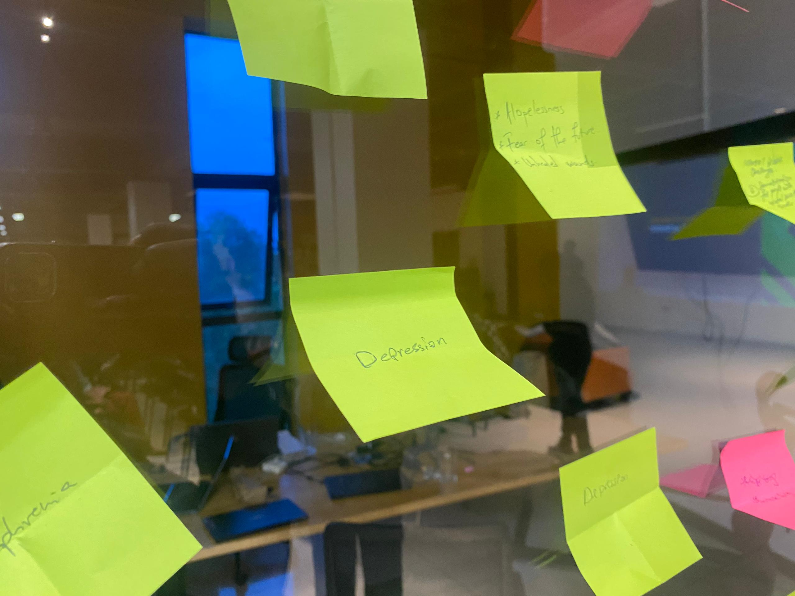
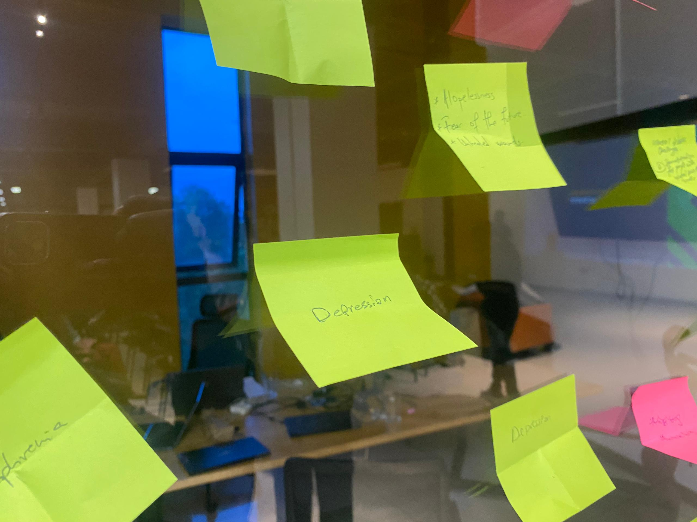
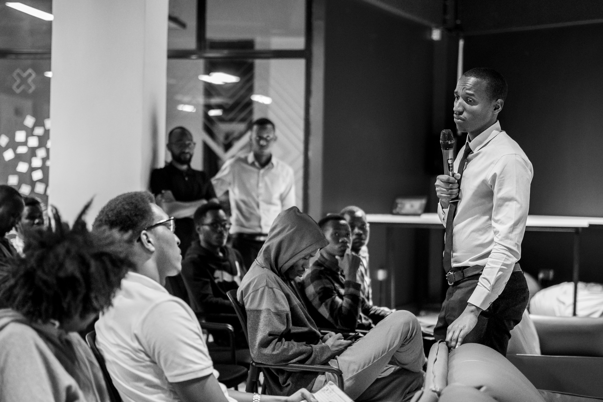
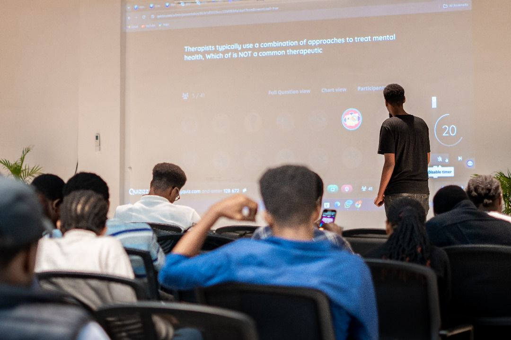
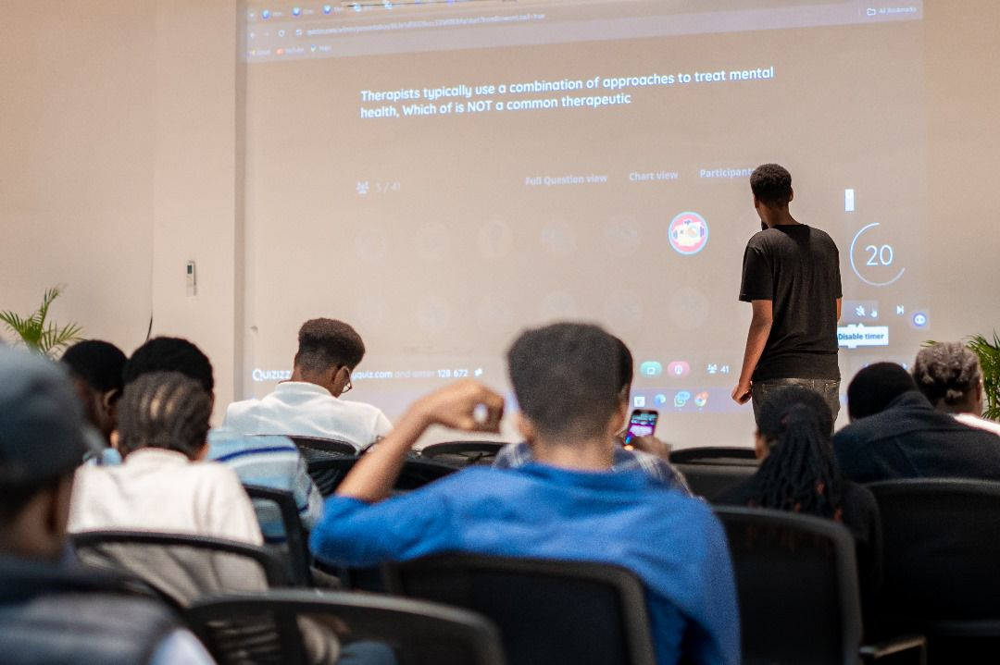
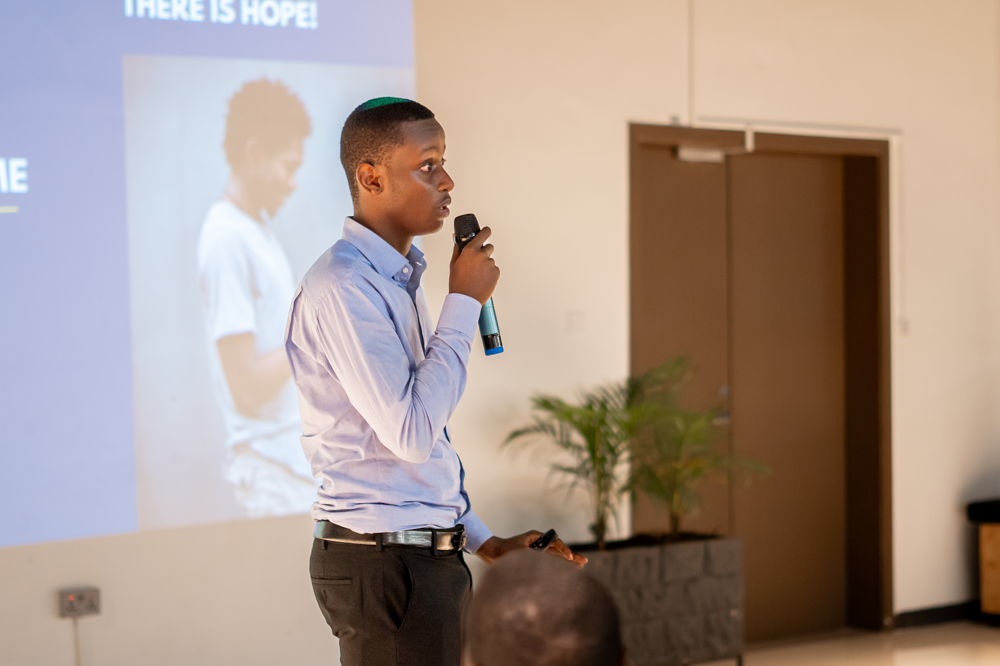

ALX COMMUNITY #Ineedhelp initiative Launch
Interactive Awareness Sessions
 

We conducted engaging sessions that shed light on common mental health challenges, not just symptoms, but also providing practical coping mechanisms. Participants left equipped with knowledge and tools for self-care, empowering them to manage their mental well-being in their daily lives.
Expert-Led Support
A qualified mental health nurse and therapist facilitated sessions, providing valuable insights and guidance based on their experience. They also offered personalized consultations for those seeking further support, ensuring individual needs were addressed and a safe space was created for open communication.
Engaging Activities
 

Games and interactive workshops weren't just fun, they were strategically designed to be informative. Participants learned about mental health in a relaxed and engaging way, fostering a sense of community and reducing the stigma often associated with mental health discussions.
Piloting Our Platform
The ALX community was the first to experience Iteme's user-friendly platform. Their participation and feedback were invaluable. We're actively incorporating their insights to refine the app and optimize the user experience, ensuring it meets the specific needs of the Rwandan community.
Our Team
Ruganintwali Boris
COO, Bachelor in Aneasthetist and Data Scientist
Rwihimba Kelvin
CEO, Software Engineer & Data Scientist
Nguweneza Pierre Christian
CTO, Software Engineer